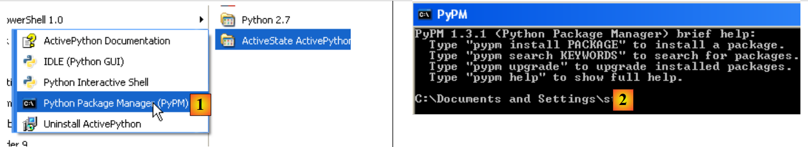
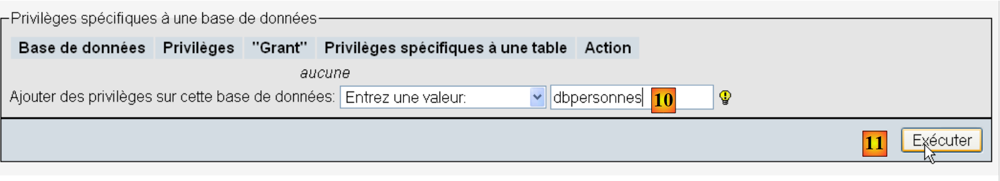

9. Verwendung von SGBD MySQL
 |
9.1. Installation des Moduls MySQLdb
Wir werden Skripte schreiben, die eine Datenbank verwenden: MySQL:
 |
Die Python-Funktionen zur Verwaltung einer Datenbank MySQL sind in einem Modul MySQLdb gekapselt, das nicht in der Standarddistribution von Python enthalten ist. Daher muss das Modul heruntergeladen und installiert werden. Hier ist eine Vorgehensweise:
 |
- Rufen Sie im Programmmenü den Python-Paketmanager [1] auf. Daraufhin erscheint das Befehlsfenster [2].
Suchen Sie in den Paketen nach dem Schlüsselwort mysql:
C:\Documents and Settings\st>pypm search mysql
Get: [pypm-be.activestate.com] :repository-index:
Get: [pypm-free.activestate.com] :repository-index:
autosync: synced 2 repositories
chartio Setup wizard and connection client for connecting
chartio-setup Setup wizard and connection client for connecting
cns.recipe.zmysqlda Recipe for installing ZMySQLDA
collective.recipe.zmysqlda Recipe for installing ZMySQLDA
django-mysql-manager DESCRIPTION_DESCRIPTION_DESCRIPTION
jaraco.mysql MySQLDB-compatible MySQL wrapper by Jason R. Coomb
lovely.testlayers mysql, postgres nginx, memcached cassandra test la
mtstat-mysql MySQL Plugins for mtstat
mysql-autodoc Generate HTML documentation from a mysql database
mysql-python Python interface to MySQL
mysqldbda MySQL Database adapter
products.zmysqlda MySQL Zope2 adapter.
pymysql Pure Python MySQL Driver
pymysql-sa PyMySQL dialect for SQLAlchemy.
pymysql3 Pure Python MySQL Driver
sa-mysql-dt Alternative implementation of DateTime column for
schemaobject Iterate over a MySQL database schema as a Python o
schemasync A MySQL Schema Synchronization Utility
simplestore A datastore layer built on top of MySQL in Python.
sqlbean A auto maping ORM for MYSQL and can bind with memc
sqlwitch sqlwitch offers idiomatic SQL generation on top of
tiddlywebplugins.mysql MySQL-based store for tiddlyweb
tiddlywebplugins.mysql2 MySQL-based store for tiddlyweb
zest.recipe.mysql A Buildout recipe to setup a MySQL database.
Es wurden alle Module aufgelistet, deren Name oder Beschreibung das Schlüsselwort mysql enthält. Das für uns relevante Modul ist [mysql-python], Zeile 14. Wir installieren es:
C:\Documents and Settings\st>pypm install mysql-python
The following packages will be installed into "%APPDATA%\Python" (2.7):
mysql-python-1.2.3
Hit: [pypm-free.activestate.com] mysql-python 1.2.3
Installing mysql-python-1.2.3
C:\Documents and Settings\st>echo %APPDATA%
C:\Documents and Settings\st\Application Data
- Zeile 5: Das Paket mysql-python-1.2.3 wurde im Ordner „%APPDATA%\Python“ installiert, wobei APPDATA der in Zeile 8 angegebene Ordner ist.
Dieser Vorgang kann fehlschlagen, wenn:
- der verwendete Python-Interpreter eine 64-Bit-Version ist;
- der Pfad %APPDATA% Zeichen mit Akzenten enthält.
9.2. Installation von MySQL
Es gibt verschiedene Möglichkeiten, SGBD MySQL zu installieren. Hier haben wir WampServer verwendet, ein Paket, das mehrere Programme umfasst:
- einen Apache-Webserver. Wir werden ihn zum Schreiben von Webskripten in Python verwenden;
- das SGBD MySQL;
- die Skriptsprache PHP;
- ein in PHP geschriebenes Verwaltungstool für SGBD MySQL: phpMyAdmin.
WampServer kann (Stand: Juni 2011) unter folgender Adresse heruntergeladen werden:
 |
- Bei [1] lädt man die passende Version von WampServer herunter;
- Bei [2] wird das Programm nach der Installation gestartet. Dadurch werden der Apache-Webserver sowie SGBD und MySQL gestartet;
- Bei [3] kann WampServer nach dem Start über ein Symbol namens [3] verwaltet werden, das sich unten rechts in der Taskleiste befindet;
- In [4] wird das Verwaltungstool von MySQL gestartet.
Man erstellt eine Datenbank mit dem Namen [dbpersonnes]:

Es wird ein Benutzer [admpersonnes] mit dem Passwort [nobody] angelegt:
 |  |
 |
- in [1], dem Benutzernamen;
- in [2] den Rechner von SGBD, auf dem ihm Rechte gewährt werden;
- in [3] sein Passwort [nobody];
- in [4], ebenso;
- in [5] werden diesem Benutzer keine Rechte erteilt;
- bei [6] wird er angelegt.
 |
- in [7] kehrt man zur Startseite von phpMyAdmin zurück;
- In [8] nutzt man den Link [Privileges] auf dieser Seite, um die Einträge des Benutzers [admpersonnes] und [9] zu bearbeiten.
 |
- In [10] wird angegeben, dass dem Benutzer [admpersonnes] Rechte an der Datenbank [dbpersonnes] erteilt werden sollen;
- in [11] wird die Auswahl bestätigt.
 |
- über den Link [12] [Tout cocher] werden dem Benutzer [admpersonnes] alle Rechte an der Datenbank [dbpersonnes] [13] erteilt;
- man bestätigt dies in [14].
Nun haben wir:
- eine Datenbank MySQL [dbpersonnes];
- einen Benutzer [admpersonnes / nobody], der über alle Rechte an dieser Datenbank verfügt.
Wir werden Python-Skripte schreiben, um die Datenbank zu nutzen.
9.3. Verbindung zu einer Datenbank MySQL – 1
# Import des Moduls MySQLdb
import sys
sys.path.append("D:\Programs\ActivePython\site-packages")
import MySQLdb
# Verbindung zu einer Datenbank MySQL
....
Hinweise:
- Zeilen 2–4: Skripte, die Operationen mit den Modulen SGBD und MySQL enthalten, müssen das Modul MySQLdb importieren. Wir erinnern uns, dass wir dieses Modul im Ordner [%APPDATA%\Python] installiert haben. Der Ordner „[%APPDATA%\Python]“ wird automatisch durchsucht, wenn ein Python-Code ein Modul anfordert. Tatsächlich werden alle in „sys.path“ deklarierten Ordner durchsucht. Hier ist ein Beispiel, das diese Ordner anzeigt:
# -*- coding=utf-8 -*-
import sys
# Anzeige der Ordner von sys.path
for dossier in sys.path:
print dossier
Die Bildschirmausgabe sieht wie folgt aus:
Zeile 8: der Ordner [site-packages], in dem MySQLdb ursprünglich installiert wurde. Wir verschieben den Ordner „[site-packages]“, in dem das Dienstprogramm „pypm“ die Python-Module installiert. Um einen neuen Ordner hinzuzufügen, den Python bei der Suche nach Modulen durchsucht, fügen wir ihn zur Liste „sys.path“ hinzu:
# Import des Moduls MySQLdb
import sys
sys.path.append("D:\Programs\ActivePython\site-packages")
import MySQLdb
# Verbindung zu einer Datenbank MySQL
....
In Zeile 3 fügt man den Ordner hinzu, in den das Modul MySQLdb verschoben wurde.
Der vollständige Code des Beispiels lautet wie folgt:
# Import des Moduls MySQLdb
import sys
sys.path.append("D:\Programs\ActivePython\site-packages")
import MySQLdb
# Verbindung zu einer Datenbank MySQL
# Die Benutzeridentität lautet (admpersonnes,nobody)
user="admpersonnes"
pwd="nobody"
host="localhost"
connexion=None
try:
print "connexion..."
# Anmeldung
connexion=MySQLdb.connect(host=host,user=user,passwd=pwd)
# Nachverfolgung
print "Connexion a MySQL reussie sous l'identite host={0},user={1},passwd={2}".format(host,user,pwd)
except MySQLdb.OperationalError,message:
print "Erreur : {0}".format(message)
finally:
try:
connexion.close()
except:
pass
- Zeilen 8–11: Das Skript verbindet (Zeile 15) den Benutzer [admpersonnes / nobody] mit SGBD und MySQL auf dem Rechner [localhost]. Es wird keine Verbindung zu einer bestimmten Datenbank hergestellt;
- Zeilen 12–24: Die Verbindung kann fehlschlagen. Daher wird sie in einem „try/except/finally“-Block ausgeführt;
- Zeile 15: Die Methode connect des Moduls MySQLdb akzeptiert verschiedene benannte Parameter:
- user: Benutzer, der Eigentümer der Verbindung [admpersonnes] ist;
- pwd: Passwort des Benutzers [nobody];
- host: Maschine des DBMS MySQL [localhost];
- db: Die Datenbank, mit der eine Verbindung hergestellt wird. Optional.
- Zeile 18: Wenn eine Ausnahme ausgelöst wird, handelt es sich um den Typ [ MySQLdb.OperationalError], und die zugehörige Fehlermeldung ist in der Variablen [message] zu finden;
- Zeilen 20–23: In der Anweisung [finally] wird die Verbindung geschlossen. Im Falle einer Ausnahme wird diese abgefangen (Zeile 23), es wird jedoch nichts damit unternommen (Zeile 24).
connexion...
Connexion a MySQL reussie sous l'identite host=localhost,user=admpersonnes,passwd=nobody
9.4. Verbindung zu einer Datenbank MySQL – 2
# Import des Moduls MySQLdb
import sys
sys.path.append("D:\Programs\ActivePython\site-packages")
import MySQLdb
# ---------------------------------------------------------------------------------
def testeConnexion(hote,login,pwd):
# meldet sich an und ab (login, pwd) beim MySQL-Datenbankmanagementsystem des Host-Servers
# löst die Ausnahme MySQLdb.operationalError aus
# Verbindung
connexion=MySQLdb.connect(host=hote,user=login,passwd=pwd)
print "Connexion a MySQL reussie sous l'identite (%s,%s,%s)" % (hote,login,passwd)
# Die Verbindung wird geschlossen
connexion.close()
print "Fermeture connexion MySQL reussie\n"
# ---------------------------------------------- main
# Verbindung zur Datenbank MySQL
# Benutzeridentität
user="admpersonnes"
passwd="nobody"
host="localhost"
# Verbindungstest
try:
testeConnexion(host,user,passwd)
except MySQLdb.OperationalError,message:
print message
# mit einem nicht existierenden Benutzer
try:
testeConnexion(host,"xx","xx")
except MySQLdb.OperationalError,message:
print message
Anmerkungen:
- Zeilen 7–15: Eine Funktion, die versucht, einen Benutzer bei SGBD MySQL anzumelden und anschließend wieder abzumelden. Zeigt das Ergebnis an;
- Zeilen 18–34: Hauptprogramm – ruft die Methode testeConnexion zweimal auf und gibt eventuelle Ausnahmen aus.
9.5. Anlegen einer Tabelle MySQL
Nachdem wir nun wissen, wie man eine Verbindung mit einem SGBD MySQL herstellt, beginnen wir damit, Befehle SQL über diese Verbindung auszuführen. Dazu stellen wir eine Verbindung zur erstellten Datenbank [dbpersonnes] her und nutzen die Verbindung, um eine Tabelle in der Datenbank anzulegen.
# Import des Moduls MySQLdb
import sys
sys.path.append("D:\Programs\ActivePython\site-packages")
import MySQLdb
# ---------------------------------------------------------------------------------
def executeSQL(connexion,update):
# führt eine Update-Abfrage zur Aktualisierung der Verbindung aus
# Ein Cursor wird angefordert
curseur=connexion.cursor()
# Führt die SQL-Abfrage über die Verbindung aus
try:
curseur.execute(update)
connexion.commit()
except Exception, erreur:
connexion.rollback()
raise
finally:
curseur.close()
# ---------------------------------------------- main
# Verbindung zur Datenbank MySQL
# die Benutzer-ID
ID="admpersonnes"
PWD="nobody"
# Host-Rechner des DBMS
HOTE="localhost"
# Datenbank-ID
BASE="dbpersonnes"
# Verbindung
try:
connexion=MySQLdb.connect(host=HOTE,user=ID,passwd=PWD,db=BASE)
except MySQLdb.OperationalError,message:
print message
sys.exit()
# Löschen der Tabelle „Personen“, falls vorhanden
# Wenn sie nicht existiert, tritt ein Fehler auf
# wird ignoriert
requete="drop table personnes"
try:
executeSQL(connexion,requete)
except:
pass
# Erstellung der Tabelle „Personen“
requete="create table personnes (prenom varchar(30) NOT NULL, nom varchar(30) NOT NULL, age integer NOT NULL, primary key(nom,prenom))"
try:
executeSQL(connexion,requete)
except MySQLdb.OperationalError,message:
print message
sys.exit()
# Abmeldung und Beenden
try:
connexion.close()
except MySQLdb.OperationalError,message:
print message
sys.exit()
Anmerkungen:
- Zeile 7: Die Funktion executeSQL führt eine Abfrage SQL über eine geöffnete Verbindung aus;
- Zeile 10: Die Operationen SQL auf der Verbindung erfolgen über ein spezielles Objekt, das als Cursor bezeichnet wird;
- Zeile 10: Abrufen eines Cursors;
- Zeile 13: Ausführung der Abfrage SQL;
- Zeile 14: Die aktuelle Transaktion wird bestätigt;
- Zeile 15: Im Falle einer Ausnahme wird die Fehlermeldung in der Variablen „fehler“ gespeichert;
- Zeile 16: Die aktuelle Transaktion wird zurückgesetzt;
- Zeile 17: Die Ausnahme wird erneut ausgelöst;
- Zeile 19: Unabhängig davon, ob ein Fehler vorliegt oder nicht, wird der Cursor geschlossen. Dadurch werden die damit verbundenen Ressourcen freigegeben.
create table personnes (prenom varchar(30) NOT NULL, nom varchar(30) NOT NULL, age integer NOT NULL, primary key(nom,prenom)) : requete reussie
Überprüfung mit phpMyAdmin:
 |
- Die Datenbank [dbpersonnes] [1] enthält eine Tabelle [personnes] [2] mit der Struktur [3] und dem Primärschlüssel [4].
9.6. Befüllen der Tabelle [personnes]
Nachdem wir zuvor die Tabelle [personnes] angelegt haben, füllen wir sie nun.
# Import des Moduls MySQLdb
import sys
sys.path.append("D:\Programs\ActivePython\site-packages")
import MySQLdb
# weitere Module
import re
# ---------------------------------------------------------------------------------
def executerCommandes(HOTE,ID,PWD,BASE,SQL,suivi=False,arret=True):
# Verwendet die Verbindung (HOTE,ID,PWD,BASE)
# führt über diese Verbindung die Befehle SQL aus, die in der Textdatei SQL enthalten sind
# Diese Datei ist eine Befehlsdatei SQL, deren Befehle zeilenweise ausgeführt werden
# Wenn „suivi“=True ist, wird bei jeder Ausführung eines Befehls SQL eine Meldung angezeigt, die angibt, ob der Befehl erfolgreich war oder fehlgeschlagen ist
# Wenn „arret“=True ist, bricht die Funktion beim ersten aufgetretenen Fehler ab, andernfalls führt sie alle SQL-Befehle aus
# Die Funktion gibt eine Liste zurück (Anzahl der Fehler, Fehler1, Fehler2, ...)
# Es wird überprüft, ob die Datei „SQL“ vorhanden ist
data=None
try:
data=open(SQL,"r")
except:
return [1,"Le fichier %s n'existe pas" % (SQL)]
# Verbindung
try:
connexion=MySQLdb.connect(host=HOTE,user=ID,passwd=PWD,db=BASE)
except MySQLdb.OperationalError,erreur:
return [1,"Erreur lors de la connexion a MySQL sous l'identite (%s,%s,%s,%s) : %s" % (HOTE, ID, PWD, BASE, erreur)]
# Ein Cursor wird angefordert
curseur=connexion.cursor()
# Ausführung der in der Datei SQL enthaltenen Abfragen SQL
# sie werden in ein Array gespeichert
requetes=data.readlines()
# sie werden nacheinander ausgeführt – zunächst keine Fehler
erreurs=[0]
for i in range(len(requetes)):
# Die aktuelle Abfrage wird gespeichert
requete=requetes[i]
# Ist die Abfrage leer? Wenn ja, geht man zur nächsten Abfrage über
if re.match(r"^\s*$",requete):
continue
# Ausführung der Abfrage i
erreur=""
try:
curseur.execute(requete)
except Exception, erreur:
pass
#Ist ein Fehler aufgetreten?
if erreur:
# Ein weiterer Fehler
erreurs[0]+=1
# Fehlermeldung
msg="%s : Erreur (%s)" % (requete,erreur)
erreurs.append(msg)
# Bildschirmüberwachung ja oder nein?
if suivi:
print msg
# Beenden?
if arret:
return erreurs
else:
if suivi:
print "%s : Execution reussie" % (requete)
# Verbindung schließen und Ressourcen freigeben
curseur.close()
connexion.commit()
# Abmeldung
try:
connexion.close()
except MySQLdb.OperationalError,erreur:
# Ein weiterer Fehler
erreurs[0]+=1
# Fehlermeldung
msg="%s : Erreur (%s)" % (requete,erreur)
erreurs.append(msg)
# Zurück
return erreurs
# ---------------------------------------------- main
# Verbindung zur Datenbank MySQL
# Benutzeridentität
ID="admpersonnes"
PWD="nobody"
# Host-Rechner des DBMS
HOTE="localhost"
# Datenbank-ID
BASE="dbpersonnes"
# ID der auszuführenden Befehlstextdatei SQL
TEXTE="sql.txt";
# Erstellung und Befüllung der Tabelle
erreurs=executerCommandes(HOTE,ID,PWD,BASE,TEXTE,True,False)
#Anzeige der Fehleranzahl
print "il y a eu %s erreur(s)" % (erreurs[0])
for i in range(1,len(erreurs)):
print erreurs[i]
Die Datei sql.txt:
In Zeile 5 wurde absichtlich ein Fehler eingefügt.
Die Bildschirmausgabe:
drop table personnes : Execution reussie
create table personnes (prenom varchar(30) not null, nom varchar(30) not null, age integer not null, primary key (nom,prenom)) : Execution reussie
insert into personnes values('Paul','Langevin',48) : Execution reussie
insert into personnes values ('Sylvie','Lefur',70) : Execution reussie
xx : Erreur ((1064, "You have an error in your SQL syntax; check the manual that corresponds to your MySQL server version for the right syntax to use near 'xx' at
line 1"))
insert into personnes values ('Pierre','Nicazou',35) : Execution reussie
insert into personnes values ('Geraldine','Colou',26) : Execution reussie
insert into personnes values ('Paulette','Girond',56) : Execution reussie
il y a eu 1 erreur(s)
xx : Erreur ((1064, "You have an error in your SQL syntax; check the manual that corresponds to your MySQL server version for the right syntax to use near 'xx' at line 1"))
Überprüfung mit phpMyAdmin:

- In [1] ermöglicht der Link [Afficher] den Zugriff auf den Inhalt der Tabelle [personnes] [2].
9.7. Ausführung beliebiger Abfragen SQL
Mit dem folgenden Skript kann eine Befehlsdatei SQL ausgeführt und das Ergebnis jedes einzelnen Befehls angezeigt werden:
- das Ergebnis von SELECT, wenn der Befehl SELECT lautet;
- die Anzahl der geänderten Zeilen, wenn der Befehl INSERT, UPDATE oder DELETE lautet.
# Import des Moduls MySQLdb
import sys
sys.path.append("D:\Programs\ActivePython\site-packages")
import MySQLdb
# weitere Module
import re
def cutNewLineChar(ligne):
# Das Zeilenendezeichen von [ligne] wird entfernt, falls vorhanden
l=len(ligne)
while(ligne[l-1]=="\n" or ligne[l-1]=="\r"):
l-=1
return(ligne[0:l])
# ---------------------------------------------------------------------------------
def afficherInfos(curseur):
# Zeigt das Ergebnis einer SQL-Abfrage an
# Handelte es sich um eine SELECT-Anweisung?
if curseur.description:
# Es gibt eine Beschreibung – es handelt sich also um eine SELECT-Anweisung
# Beschreibung[i] ist die Beschreibung der Spalte Nr. i der SELECT-Anweisung
# BeschreibungQZXW2HTMLBW2ldZQXQZXW2HTMLBWzBdZQX ist der Name der Spalte Nr. i des Select-Feldes
# Es werden die Feldnamen angezeigt
titre=""
for i in range(len(curseur.description)):
titre+=curseur.description[i][0]+","
# Die Liste der Felder wird ohne abschließendes Komma angezeigt
print titre[0:len(titre)-1]
# Trennzeile
print "-"*(len(titre)-1)
# aktuelle Zeile des Select-Feldes
ligne=curseur.fetchone()
while ligne:
print ligne
# nächste Zeile des Auswahlfelds
ligne=curseur.fetchone()
else:
# Es sind keine Felder vorhanden – es handelte sich nicht um ein Select-Feld
print "%s lignes(s) a (ont) ete modifiee(s)" % (curseur.rowcount)
# ---------------------------------------------------------------------------------
def executerCommandes(HOTE,ID,PWD,BASE,SQL,suivi=False,arret=True):
# verwendet die Verbindung (HOTE,ID,PWD,BASE)
# führt über diese Verbindung die Befehle SQL aus, die in der Textdatei SQL enthalten sind
# Diese Datei ist eine Befehlsdatei SQL, deren Befehle zeilenweise ausgeführt werden
# Wenn „suivi=1“, wird bei jeder Ausführung eines Befehls „SQL“ eine Meldung angezeigt, die angibt, ob der Befehl erfolgreich war oder fehlgeschlagen ist
# Wenn „arret“=1 ist, bricht die Funktion beim ersten aufgetretenen Fehler ab, andernfalls führt sie alle SQL-Befehle aus
# Die Funktion gibt ein Array zurück (Anzahl der Fehler, Fehler1, Fehler2, …)
# Es wird geprüft, ob die Datei „SQL“ vorhanden ist
data=None
try:
data=open(SQL,"r")
except:
return [1,"Le fichier %s n'existe pas" % (SQL)]
# Verbindung
try:
connexion=MySQLdb.connect(host=HOTE,user=ID,passwd=PWD,db=BASE)
except MySQLdb.OperationalError,erreur:
return [1,"Erreur lors de la connexion a MySQL sous l'identite (%s,%s,%s,%s) : %s" % (HOTE, ID, PWD, BASE, erreur)]
# Ein Cursor wird angefordert
curseur=connexion.cursor()
# Ausführung der in der Datei SQL enthaltenen Abfragen SQL
# sie werden in ein Array gespeichert
requetes=data.readlines()
# sie werden nacheinander ausgeführt – zunächst keine Fehler
erreurs=[0]
for i in range(len(requetes)):
# Die aktuelle Abfrage wird gespeichert
requete=requetes[i]
# Ist die Abfrage leer? Wenn ja, geht man zur nächsten Abfrage über
if re.match(r"^\s*$",requete):
continue
# Ausführung der Abfrage i
erreur=""
try:
curseur.execute(requete)
except Exception, erreur:
pass
#Ist ein Fehler aufgetreten?
if erreur:
# Ein weiterer Fehler
erreurs[0]+=1
# Fehlermeldung
msg="%s : Erreur (%s)" % (requete,erreur)
erreurs.append(msg)
# Bildschirmüberwachung ja oder nein?
if suivi:
print msg
# Wird der Vorgang abgebrochen?
if arret:
return erreurs
else:
if suivi:
print "%s : Execution reussie" % (requete)
# Informationen zum Ergebnis der ausgeführten Abfrage
afficherInfos(curseur)
# Verbindung schließen und Ressourcen freigeben
curseur.close()
connexion.commit()
# Abmeldung
try:
connexion.close()
except MySQLdb.OperationalError,erreur:
# Ein weiterer Fehler
erreurs[0]+=1
# Fehlermeldung
msg="%s : Erreur (%s)" % (requete,erreur)
erreurs.append(msg)
# Zurück
return erreurs
# ---------------------------------------------- main
# Verbindung zur Datenbank MySQL
# Benutzeridentität
ID="admpersonnes"
PWD="nobody"
# Host-Rechner des DBMS
HOTE="localhost"
# ID der Datenbank
BASE="dbpersonnes"
# ID der auszuführenden Befehlstextdatei SQL
TEXTE="sql2.txt"
# Erstellung und Befüllung der Tabelle
erreurs=executerCommandes(HOTE,ID,PWD,BASE,TEXTE,True,False)
#Anzeige der Fehleranzahl
print "il y a eu %s erreur(s)" % (erreurs[0])
for i in range(1,len(erreurs)):
print erreurs[i]
Anmerkungen:
- Die Neuerung befindet sich in Zeile 100 des Skripts: Nach der Ausführung eines Befehls SQL werden Informationen über den von dieser Abfrage verwendeten Cursor abgefragt. Diese Informationen werden von der Funktion afficheInfos in den Zeilen 16–40 bereitgestellt;
- Zeilen 19 und 39: Wenn die ausgeführte Abfrage SQL eine SELECT war, ist das Attribut [curseur.description] ein Array, dessen Element Nr. i das Feld Nr. i des Ergebnisses von SELECT beschreibt. Andernfalls ist das Attribut [curseur.rowcount] (Zeile 39) die Anzahl der Zeilen, die durch die Abfrage INSERT, UPDATE oder DELETE geändert wurden;
- Zeilen 32 und 36: Mit der Methode [curseur.fetchone] lässt sich die aktuelle Zeile aus SELECT abrufen. Es gibt eine Methode [curseur.fetchall], mit der alle Zeilen auf einmal abgerufen werden können.
Die Datei mit den ausgeführten Abfragen:
Die Bildschirmausgabe:
Prüfung PhpMyadmin:
 |